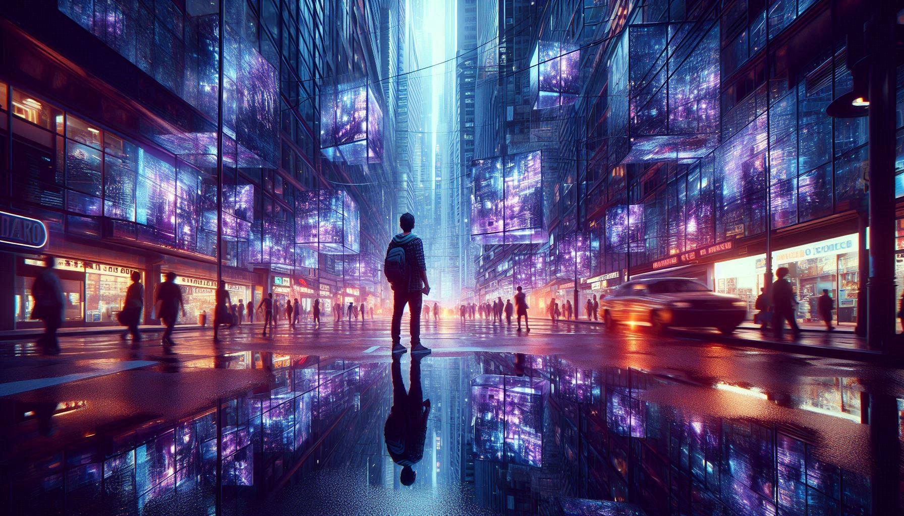

ERROR IN THE MATRIX OF MEMORY

Mandela Effect ennal oru valiya group of people, oru kaaryam ore pole thirichu ormikkunnu, pakshe actual history-il angne oru kaaryame nadannittilla! Ithu verum oru mistake mathramalla, pakaram oru Collective False Memory aanu.
Ithu kaanumpol ningalude brain-u polum thonnum ningal vere oru lokath aayirunnu ennu:
| SUBJECT | POPULAR MEMORY | THE COLD REALITY |
|---|---|---|
| Nelson Mandela | Jail-il vechu 1980-il marichu. | Ayal marichath 2013-il aanu. |
| Pikachu | Vaalinte edge-il black color undu. | Pikachu-vinte vaalil black color illa! |
| Looney Tunes | Spell cheyyunnath "Looney Toons". | It is actually "Looney Tunes". |
| KitKat | Naduil dash undu (Kit-Kat). | It is always "KitKat" (No dash). |
| Star Wars | Darth Vader says "Luke, I am your father." | He actually says "No, I am your father." |
Pala theorists-um parayunnath Switzerland-ile CERN (Large Hadron Collider) particle experiments nadathiyappol nammude timeline-il oru cheriya 'shift' undayi ennanu. Particle-ukale collision nadathunnath vazhi nammal ariyathe oru Parallel Universe-ilekk shift aayi ennu chilar viswasikkunnu.
Science-inu ithinu oru logical explanation undu. Namukk nammude brain-ine 100% viswasikkaan kazhiyilla. Brain pala samayathum gap fill cheyyaan vendi False Information create cheyyum.
Mandela Effect oru simulation error aano atho verum brain trick aano? Engane aanelum, lakshakkanakkinu aalukal ore pole mistake വരുത്തുന്നത് oru valiya mystery thanneyaanu. Aduth thavana ningal oru branded logo-o movie dialogue-o kaanumpol, athu thirichu nokkuka—Maybe the reality just changed! 😌